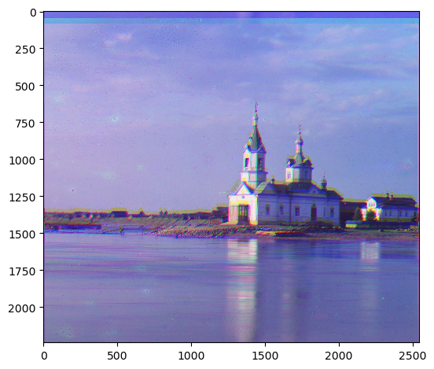

cathedral.jpg
Green: (5, 2) \n Red: (12, 3)

monastery.jpg
Green: (-3, 2) \n Red: (3, 2)

tobolsk.jpg
Green: (3, 3) \n Red: (6, 3)

putting images on each other LOL ctrl f to find the stuff
Exhaustive search, [-15, 15] using L2 norm. Cropped by 15% each side.
cathedral.jpg
Green: (5, 2) \n Red: (12, 3)
monastery.jpg
Green: (-3, 2) \n Red: (3, 2)
tobolsk.jpg
Green: (3, 3) \n Red: (6, 3)
Halve on each level until 400x400. Go up and add the displacements.
church.tif
Green: (48, 8) \n Red: (86, -8)
 emir.tif
Green: (78, 44) \n Red: (58, 40)

harvesters.tif
Green: (90, 34) \n Red: (90, 14)

icon.tif
Green: (70, 34) \n Red: (90, 46)
lady.tif
Green: (82, 16) \n Red: (90, -6)

melons.tif
Green: (90, 4) \n Red: (90, 4)

onion_church.tif
Green: (82, 56) \n Red: (90, 66)

sculpture.tif
Green: (94, -30) \n Red: (210, -78)

self_portrait.tif
Green: (170, 80) \n Red: (210, 114)
three_generations.tif
Green: (130, 42) \n Red: (202, 30)

train.tif
Green: (114, 18) \n Red: (178, 94)